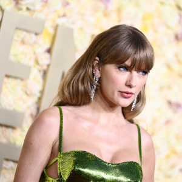

"Taylor Swift (Taylor's Version)" represents a monumental endeavor where Swift reclaims ownership of her past musical catalog.
This ambitious project involves re-recording her previous albums, ensuring that her creative vision remains intact and retaining control over her artistic legacy.
Beyond mere replication, these re-recordings are poised to offer fans a fresh perspective, potentially featuring updated arrangements, vocal nuances, and even new insights into the songs' meanings.
Beyond the music itself, this endeavor symbolizes Swift's autonomy, resilience, and determination to assert control over her narrative in an industry often marked by exploitation.
"Taylor Swift (Taylor's Version)" stands as a testament to Swift's unwavering commitment to her artistry and her unwavering connection with her loyal fanbase.
Leading up to the release of "Taylor Swift (Taylor's Version)," Swift orchestrated an intricate web of Easter eggs across her social media, music videos, and interviews, teasing fans with glimpses of what was to come.
From subtle changes in album cover art to cryptic references in Instagram captions, Swift strategically planted clues about her re-recorded discography.
Retro aesthetics, nods to significant dates, and hidden messages in lyrics sparked fervent speculation among her devoted fanbase, fueling anticipation for the reimagined albums.
These meticulously placed Easter eggs not only built excitement for "Taylor Swift (Taylor's Version)" but also showcased Swift's unparalleled connection with her audience and her masterful ability to craft narratives that resonate deeply with her fans.
